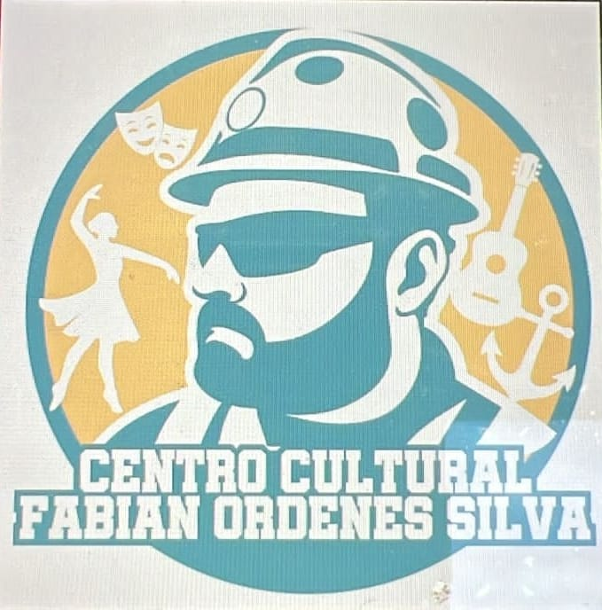
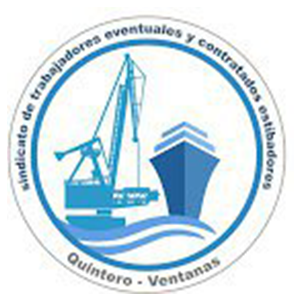
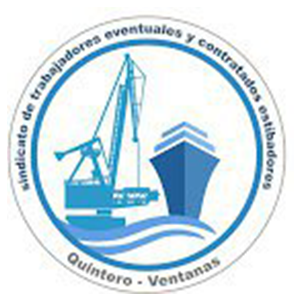
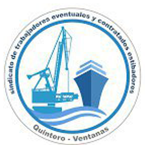
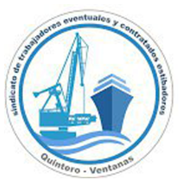

 


Área de Fotografía
Memoria visual del puerto y de su gente.

Memoria visual del puerto y de su gente.
La fotografía nos permite detener el tiempo y guardar la memoria del trabajo portuario, de las luchas y de la vida cotidiana en el territorio. Cada imagen es un fragmento de historia que se comparte con la comunidad.
En este espacio se encuentran fotógrafas, fotógrafos y personas que recién comienzan, todos aportando miradas distintas sobre el mismo lugar.
Los talleres abordan desde lo técnico hasta lo creativo, con ejercicios en el barrio, en el puerto y en el propio Centro Cultural.